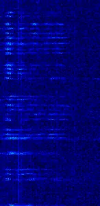

Click here to go back to the main page.
| Name: |
S5959 Callsigns: N/A Signabroam ID: S5959 |
|---|---|
| Frequencies | 5959 kHz |
| Status | Inactive |
| Voice | Male (Numbers) |
| Mode | USB |
| Location | Russia |
| Known counterpart stations | Unknown |
| Description |
This unidentified Russian 5959.00kHz station was first heard on January 17th, 2019. Two messages were logged one on the date discovered and another on the next day, although a message from this station has not been heard since. Before the long message, a test count was transmitted from a live voice, and 5 minutes later the message was spoken. Although it is not confirmed, this could have been an unidentified military station, however there were no call signs used. The station used an unusual structure of the numbers and some have speculated it was a message for training purposes. Since this station has only heard twice, we believe this is a short lived military use station. |
| Station Structure |
the station seemed to be using an unusual structure not seen before. The station starts off with a mix of three to five groups of numbers, stopping ever 9 groups, repeating the groups several times. later in the message the station changes to a format of 4 digits, 3 digits, 4 digits, and two digits, When the op says “00” the timing between these numbers varies, at several places he tells them almost together. It then repeated the three to five groups of numbers and eventually ended 20 minutes later. |
| Media |
Waterfall image:  YouTube video footage from SWLDXBulgaria: Audio sample: Test count: |